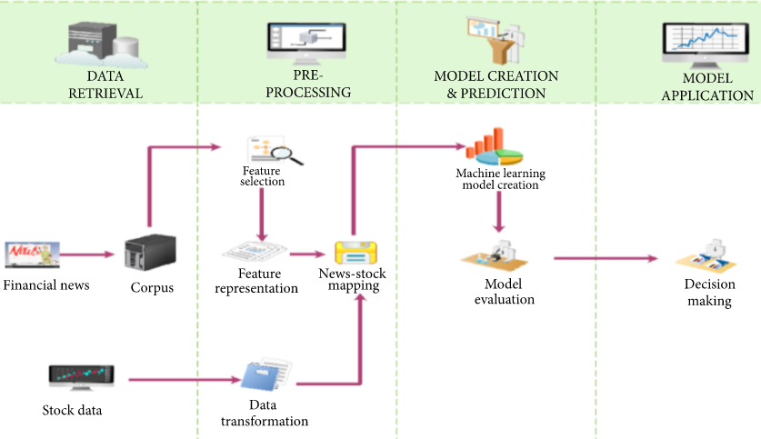

PROJECT DETAILS
SCOPE
We are trying to determine the future value of a company stock or other financial instrument traded
on an exchange.The successful prediction of a stock's future price could yield siginificant profit.
The main aim to identify the sentiments of investors. It is usually difficult as there must be rigorous
analysis of national and international events. It is very important for an investor to know the current price
and get a very close estimation of the future price.
Stock prices can be analyzed by the Investors as follows..
1.Get Real-Time stock price
2.View historical stock price
3.View the trend in market index
4.Analyze the trend in stock price
5.View amount of foreign handling
OVERVIEW
The high-level architecture of our proposed solution could be separated into three parts. First is the feature selection part, to guarantee the selected features are highly effective. Second, we look into the data and perform the dimensionality reduction.There are ways to classify different categories of stocks. Some investors prefer long term investments, while others show more interest in short-term investments.
DEPLOYMENT VIEW

Deploying the app on any system will be going to be much easier for our product.Because we had implemented a simple code which takes the dataset.
Our application takes the dataset which is given as a input,then the data will be pre-processed to eliminate the unwanted data.Then the model data will be trained and tested for the evaluation of the model.Finally the decision of the prediction for the dataset will be made.
It is common to see the stock-related reports showing an average performance, while the stock price is increasing drastically; this is one of the phenomena that indicate the stock price prediction has no fixed rules, thus finding effective features before training a model on data is necessary.
ALTERNATIVE SOLUTIONS
To predict the market, mostly use either technical or fundamental analysis. Technical analysis focuses on analyzing the direction of prices to predict future prices, while fundamental analysis depends on analyzing unstructured textual information like financial news and earning reports.Earlier classical regression methods such as linear regression, polynomial regression, etc. were used
to predict stock trends.
Nowadays, Support Vector Machines (SVM) and Artificial Neural Networks (ANN) are widely used for the prediction of stock price movements. Every algorithm has its way of learning patterns and then predicting.The proposed CNN achieved relatively higher prediction accuracy of 84.6%, while the ANN, SVM, and KNN algorithms obtained prediction accuracies of 73.5%, 67.9%, and 65.9%